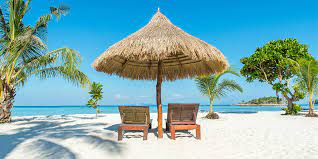

Welcome To The Home Page!
Welcome to my website showcasing my favourite holiday destinations! I have explored some of the most incredible places around the world. From the beautiful beaches of the Caribbean to the majestic mountains of the Alps, I have seen it all! I invite you to explore my website and discover the places that have touched my heart and made me fall in love with travelling the globe. Here you will find detailed information about my favourite holiday destinations, including the best places to stay, eat, shop, and explore. I hope you will find my website useful and inspiring. Whether you are looking for a relaxing weekend getaway or an exciting adventure, we have something for everyone. So, what are you waiting for? Start your journey now and make your holiday dreams come true! Feel free to explore the links at the top of the page which include some of my favourite countries I have visited. I have provided pages showing my experience in these countries.
City Breaks
Popular City Destinations
City breaks are a great way to explore a new place and experience a different culture in a short amount of time. They offer a unique opportunity to explore a city and take in the sights, sounds, smells, and tastes that make it unique. City breaks often include attractions such as museums, parks, amusement parks, and shopping districts. They can also be a great way to experience a city's nightlife and dining scene. City breaks are a great way to get a taste of a new place without the added stress of a long vacation. If you are looking for a holiday full of activity and experience city breaks are the way to go! I have provided a link at the top of the page to read more in depth of my favourite cities I have visited. Please feel free to explore the links on the navigation page if you are interested.
Beach Holidays
Why You should experience a beach holiday
Beach holidays are the perfect getaway for anyone looking to escape the hustle and bustle of everyday life. Whether you’re looking for a romantic getaway, a family vacation, or just a quick weekend escape, a beach holiday is an ideal choice. From lounging on the sand and taking a dip in the warm ocean, to exploring the nearby towns and villages, there’s something for everyone. Beach holidays can be as relaxing or as adventurous as you like, depending on your destination and preferences. You can spend your days soaking up the sun, taking a leisurely stroll along the beach, or enjoy a variety of water sports. If you’re looking for a more active holiday, there’s plenty of activities available including snorkeling, sailing, windsurfing and more. There’s also plenty of opportunities for shopping, dining, and experiencing the local culture in local towns and villages. Beach holidays are an affordable and enjoyable way to get away from it all and relax in the sun. From romantic getaways to family vacations, beach holidays offer something for everyone.